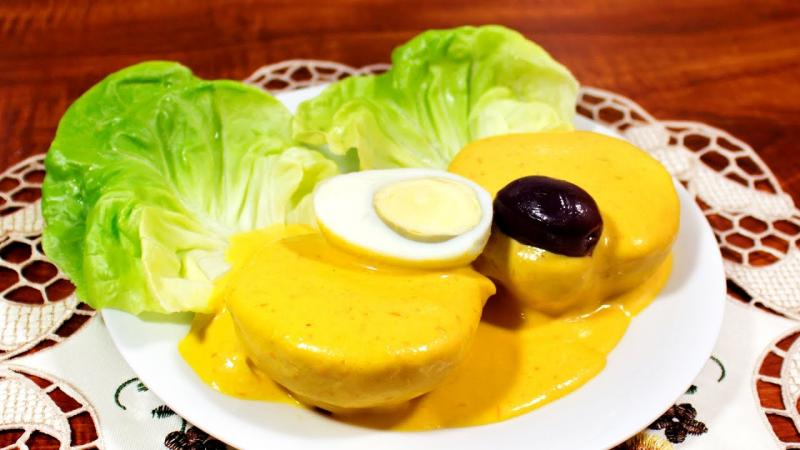

INICIO
Papa a la Huancaína

la papa a la Huancaína una entrada liviana y sabrosa de la gastronomía peruana
Ingredientes
- 4 ajíes amarillos frescos (sin venas ni semillas) o 2 cdas. de ají amarillo en pasta.
- 200 g de queso fresco (queso blanco tipo Andino o feta).
- 1/2 taza de leche evaporada (o leche entera).
- 4 galletas de soda (o 6 galletas saladas).
- 1 diente de ajo.
- 1/2 cdta. de sal.
- 1/2 cdta. de pimienta.
- 2 cdas. de aceite vegetal.
- 6 papas amarillas medianas (o blancas, hervidas y peladas).
- 4 huevos duros (cortados en mitades).
- Lechuga (para decorar).
- Aceitunas negras (opcional).
- 1/2 cebolla roja en rodajas finas (opcional).
Pasos
- Hervir las papas
- En una licuadora, mezcla: Ají amarillo (fresco o en pasta), Queso fresco desmenuzado, Leche evaporada, Galletas
de soda (para espesar), Ajo, sal, pimienta y aceite. Licúa hasta obtener una salsa cremosa y homogénea. Si queda
muy espesa, agrega un poco más de leche.
- En un plato, coloca: Hojas de lechuga como base, Rodajas de papa encima, Baña generosamente con la salsa
huancaína, Decora con huevo duro, aceitunas y cebolla roja (opcional).
- Servir